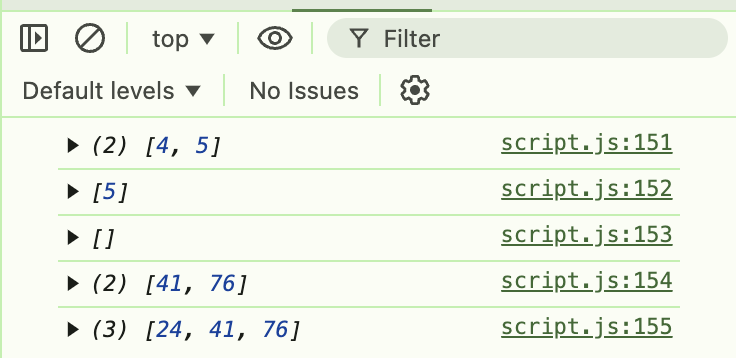

Напиши функцію filterArray(numbers, value), яка приймає масив чисел (numbers) та значення (value) як параметри.
Функція повинна повертати новий масив лише тих чисел із масиву numbers, які більші за значення value.
Усередині функції:
numbers.
if усередині циклу для перевірки кожного елемента и додавання до свого масиву.
function filterArray(numbers, value) {
const filteredNumbers = [];
for (let i = 0; i < numbers.length; i ++) {
if (numbers[i] > value) {
filteredNumbers.push(numbers[i]);
}
}
return filteredNumbers;
}
console.log(filterArray([1, 2, 3, 4, 5], 3));
console.log(filterArray([1, 2, 3, 4, 5], 4));
console.log(filterArray([1, 2, 3, 4, 5], 5));
console.log(filterArray([12, 24, 8, 41, 76], 38));
console.log(filterArray([12, 24, 8, 41, 76], 20));
